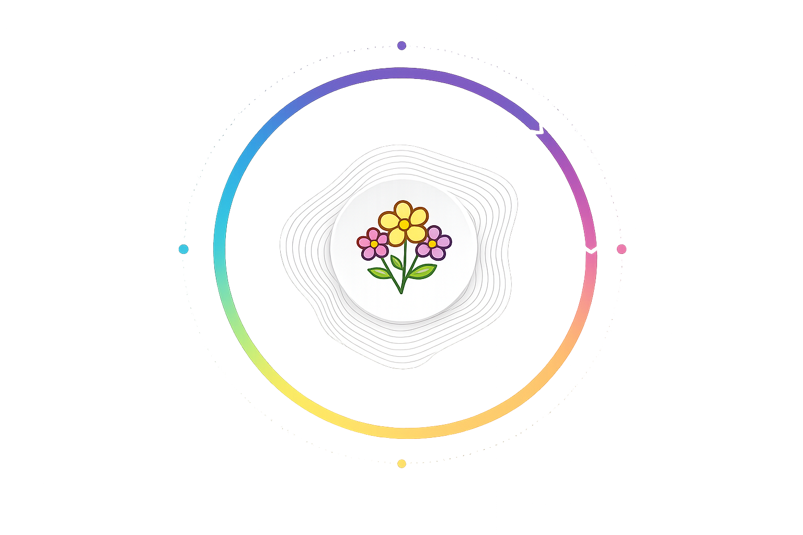

Aprenda a reconhecer as três principais fases do ciclo e compreenda como ele funciona.
Embora a violência doméstica apresente diferentes formas e particularidades, a psicóloga norte-americana Lenore Walker identificou que as agressões ocorridas no contexto conjugal seguem um ciclo que se repete continuamente.

Nesse estágio inicial, o agressor passa a demonstrar tensão e irritação por motivos aparentemente insignificantes, podendo apresentar explosões de raiva. Além disso, humilha a vítima, profere ameaças e danifica objetos.
A mulher procura acalmar o agressor, sente-se angustiada e evita qualquer atitude que possa “provocá-lo”. Os sentimentos são intensos e variados: tristeza, angústia, ansiedade, medo e decepção, entre outros.
De modo geral, a vítima tende a negar o que está acontecendo, omite os fatos das outras pessoas e, muitas vezes, acredita ter feito algo errado para justificar o comportamento violento do agressor ou pensa que “ele apenas teve um dia ruim no trabalho”, por exemplo. Essa tensão pode se prolongar por dias ou até anos; contudo, como se intensifica gradativamente, é bastante provável que a situação evolua para a Fase 2.

Essa etapa representa a explosão do agressor, momento em que a perda de controle atinge seu ápice e resulta no ato violento. Nela, toda a tensão acumulada na fase anterior se concretiza por meio de agressões que podem ser verbais, físicas, psicológicas, morais ou patrimoniais.
Ainda que reconheça que o agressor esteja fora de controle e represente uma ameaça significativa à sua vida, a mulher frequentemente se sente paralisada e incapaz de reagir. Nesse momento, vivencia intensa tensão psicológica, manifestada por sintomas como insônia, perda de peso, fadiga constante e ansiedade, além de experimentar sentimentos de medo, ódio, solidão, autocompaixão, vergonha, confusão e dor.
Nesse contexto, ela pode tomar algumas decisões — as mais frequentes incluem buscar ajuda, formalizar denúncia, refugiar-se na casa de amigos ou familiares, solicitar a separação e, em situações extremas, atentar contra a própria vida. Em geral, ocorre um afastamento do agressor.

Também chamada de “lua de mel”, essa fase é marcada pelo arrependimento do agressor, que adota uma postura carinhosa e atenciosa para reconquistar a parceira. A mulher passa a se sentir confusa e pressionada a manter o relacionamento perante a sociedade, especialmente quando há filhos envolvidos. Assim, muitas vezes ela abre mão de seus direitos e recursos, enquanto ele promete que “vai mudar”.
Instala-se, então, um período aparentemente tranquilo, no qual ela se sente feliz ao perceber esforços e mudanças de comportamento, além de relembrar os momentos positivos que viveram juntos. Diante das demonstrações de remorso, ela pode se sentir responsável por ele, o que fortalece ainda mais o vínculo de dependência entre vítima e agressor.
De modo geral, a vítima tende a negar o que está acontecendo, omite os fatos das outras pessoas e, muitas vezes, acredita ter feito algo errado para justificar o comportamento violento do agressor ou pensa que “ele apenas teve um dia ruim no trabalho”, por exemplo. Sentimentos como medo, culpa, confusão e esperança se misturam. No entanto, com o tempo, a tensão retorna e, junto com ela, reaparecem as agressões características da Fase 1.
Muitas mulheres que sofrem violência não falam sobre o que vivem por sentimentos como vergonha, medo e constrangimento. Já os agressores frequentemente cultivam a imagem de companheiros exemplares e bons pais, o que dificulta ainda mais que a vítima revele a situação. Por isso, é inaceitável afirmar que uma mulher permanece em uma relação abusiva porque “gosta de apanhar”.
Quando a vítima se cala diante da violência, o agressor tende a não se sentir responsabilizado por seus atos. Além disso, a própria sociedade, por meio de práticas que reforçam a cultura patriarcal e machista, contribui para que muitas mulheres tenham dificuldade em reconhecer que estão vivenciando o ciclo da violência.
Com o passar do tempo, os intervalos entre as fases tornam-se cada vez menores, e as agressões deixam de seguir uma ordem definida. Em alguns casos, o ciclo da violência pode culminar no feminicídio — o assassinato da mulher em razão de sua condição de gênero.
A violência doméstica assume diferentes formas, todas violando os direitos humanos. Veja quais são e como a Lei Maria da Penha as define.
A Lei nº 11.340/2006, conhecida como Lei Maria da Penha, estabelece mecanismos para combater a violência doméstica e familiar contra a mulher, trazendo ainda outras inovações. Veja o texto completo da lei.
Símbolo da luta contra a violência de gênero, Maria da Penha dedica-se há mais de 30 anos ao enfrentamento da violência doméstica e familiar contra a mulher. Conheça sua trajetória e como ela chegou até este marco.
BRASIL. Lei n. 11.340, de 7 de agosto de 2006. Disponível em: http://www.planalto.gov.br/ccivil_03/_Ato2004-2006/2006/Lei/L11340.htm. Acesso em: 27 jul. 2018.
DATASENADO. Violência doméstica e familiar contra a mulher. Secretaria de Transparência. Mar. 2013.
FUNDAÇÃO PERSEU ABRAMO. Violência doméstica. 2010. Disponível em: http://csbh.fpabramo.org.br/sites/default/files/cap5.pdf. Acesso em: 18 out. 2010.
INSTITUTO MARIA DA PENHA. Cartilha de enfrentamento à violência doméstica e familiar contra a mulher. Projeto Contexto: Educação, Gênero, Emancipação. Plataforma Educação Marco Zero. Fortaleza, 2018.
INSTITUTO NACIONAL DO SEGURO SOCIAL. Quanto custa o machismo? Parceria com o Instituto Maria da Penha e a Secretaria de Políticas para as Mulheres. 2012. Disponível em: http://www.siemaco.com.br/upload/publicacao/img2-Cartilha-Quanto-custa-o-machismo-2871.pdf. Acesso em: 11 out. 2018..
WAISELFISZ, Julio Jacobo. Mapa da violência 2015. Homicídio de mulheres no Brasil. Brasília (DF), 2015. Disponível em: https://www.mapadaviolencia.org.br/pdf2015/MapaViolencia_2015_mulheres.pdf. Acesso em: 23 out. 2018..
SECRETARIA DE POLÍTICAS PARA MULHERES. Ministério dos Direitos Humanos. Disponível em: http://www.spm.gov.br/. Acesso em: 14 ago. 2018..

A Central de Atendimento à Mulher é um serviço desenvolvido para enfrentar a violência contra as mulheres, oferecendo três modalidades de atendimento: recebimento de denúncias, orientação às vítimas de violência e informações sobre leis e campanhas.
Ligue 180. Não se cale, denuncie.